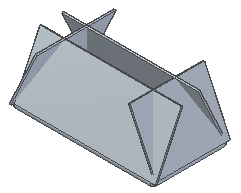
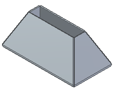

Miters and Corners tab (Multi-Edge Flange Options dialog box)
- Miter
-
Specifies how miters are handled when creating flanges.
By default, the option is set to On and the flanges are mitered.

When selected, sets the gap value to 0 and creates a miter for flanges that are created on edges that join at a single point.

Note:Miters for higher level flanges are not supported.